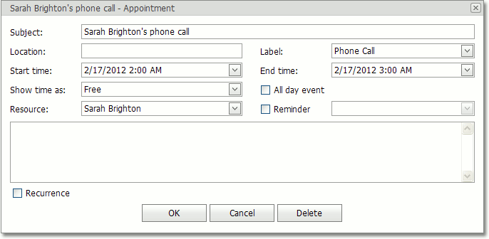

Edit an Appointment
Context Menu
There are two ways to invoke the context menu for an appointment:
- Right-click an appointment.
Use a smart tag. To invoke a smart tag, select an appointment by clicking on it, and wait for the smart tag to appear. Then, click on the smart tag to invoke the context menu.
Note
This approach may be useful if you use a web browser (e.g. Opera), where right-clicking on an appointment doesn't invoke a Scheduler control's context menu.
This context menu contains items that enable you to modify some appointment properties. For example, you can use the Show Time As submenu to change an appointment status.

If you select the Label As menu item, you can choose another label for the current appointment from the list of available label types.

Also, this menu contains the Open item, which allows you to invoke the Edit Appointment dialog for the current appointment.

Note
In addition, the appointment context menu may contain the Edit Series and Restore Default State menu items. This means that an appointment is a part of a series of recurring appointments. For more information, see Make a Series of Recurring Appointments.
Edit Appointment Dialog
To invoke the Edit Appointment dialog, you can use an Open item of an appointment's context menu. The common appearance of this dialog is illustrated below.

The Edit Appointment dialog allows you to edit the following properties of an appointment:
Subject
The subject text of an appointment. This text is displayed within an appointment to identify it.
Location
The location text that specifies where an appointment takes place. This text is displayed within the appointment in parentheses after the subject text.
Label
A mark used for at-a-glance identification of an appointment. It is displayed in the Scheduler as a background color of the rectangle region that represents the appointment.

Start time and End time
The start/end date and time of an appointment.
Show time as
A mark that specifies an appointment's availability status. It is displayed as a strip on the left side of the appointment rectangle. The strip is colored according to the status type.

All day event
Transforms an appointment into an all-day event, which always lasts an entire day (or several days). Note that if this property is true, real time values of the Start and End properties are ignored, and instead, the start of the appointment is considered to be 0:00 of the Start date, and the end of the appointment is considered to be 24:00 of the End date.
Resource
A resource that is assigned to an appointment. This resource can be used to group appointments by resources.
Reminder
Allows you to set a reminder that is responsible for sending notifications at a specified time period before an appointment's start time. For detailed information, see Manage Reminders.
Description
The text box located below the Resource and Reminder options. This text box allows you to enter a description text that will be shown within an appointment in either Day View or Work Week View.
Recurrence
Expands the Recurrence section that specifies a recurrence pattern for the appointment. For more information, see Make a Series of Recurring Appointments.

In-place Editor
Double-click a specific appointment to invoke its In-place Editor, which allows you to edit an appointment's Subject.

Note that if you need to edit other appointment properties, you can invoke the Edit Appointment dialog via the Open Appointment Editing Form button.
Mouse Operations
To select an appointment, click it with the left mouse button. To select several appointments, press and hold the CTRL key and then click appointments with the left mouse button.
Drag-and-drop operations enable you to change an appointment's time interval, if an appointment is moved along a time cell area.

If you press ESC before dropping an appointment, all changes are canceled and the appointment returns to where it used to be.
If you press and hold the CTRL key, and then click and drag an appointment (or several appointments), you will create an appointment copy(s) when the mouse button is released.
You can also change an appointment's type to all-day, and vice-versa, by dragging the appointment between the all-day area and time cells.
In grouped views, when different resources are represented by different columns, dragging the appointment to another column automatically changes the associated resource.